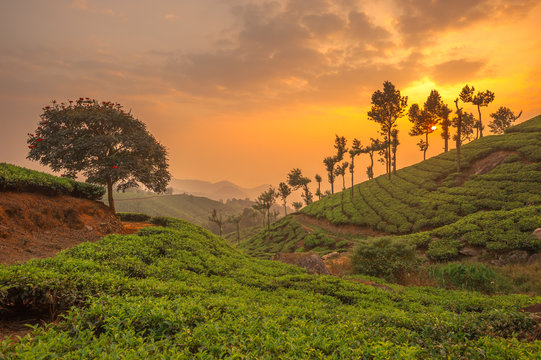
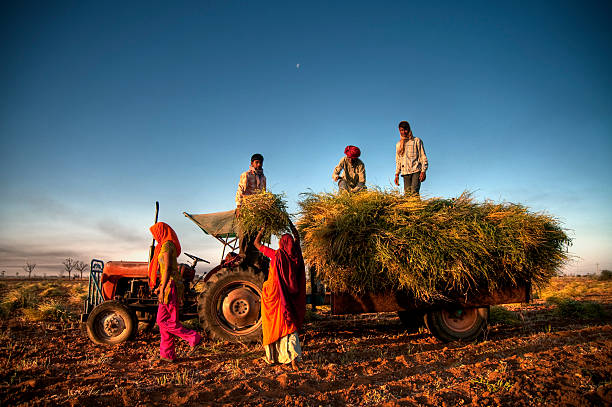
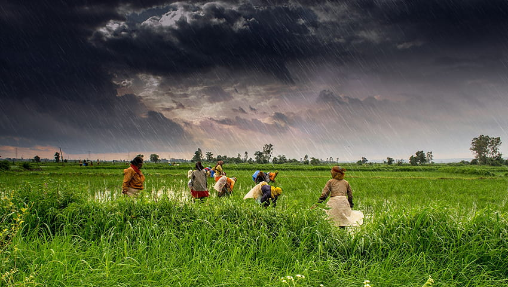

Farm's Story
The History of Fresh Picks



At Fresh Picks, our farm's story is one of passion, dedication, and a deep-rooted love for nature's bounty. It all began several decades ago when our ancestors sowed the seeds of this fertile land with dreams of creating a thriving farm that would bring the goodness of nature to people's homes.
Over the years, our family has nurtured this land with tender care, turning it into a lush oasis of fruits and vegetables. From humble beginnings, we have grown and diversified our offerings, expanding the range of fruits and produce we cultivate.
With each passing season, we have embraced the changing landscapes and challenges of farming, guided by the wisdom handed down through generations. The farm has witnessed countless sunrises and sunsets, each day bringing with it new opportunities to tend to our crops and cultivate a deeper connection with the land.
Through hard work and unwavering commitment, we have not only created a successful farm but also built a community of farmers, workers, and customers who share our passion for fresh and organic produce. Together, we celebrate the beauty of nature's cycles and the abundance it bestows upon us.
At Fresh Picks, sustainability and eco-conscious practices are at the heart of everything we do. We take pride in adopting environmentally friendly methods, ensuring that our farm remains a haven for biodiversity and a sanctuary for wildlife.
Our farm's story is intertwined with the stories of our customers who have trusted us to bring the goodness of our harvest to their tables. We are grateful for the continued support and encouragement from our community, which fuels our determination to keep growing and evolving.
As we look towards the future, we remain committed to upholding the values of integrity, quality, and responsible farming practices. Our journey is far from over, and we are excited to create new chapters in our farm's story, continuing to sow the seeds of health, happiness, and sustainable living.
Join us at Fresh Picks, and together, let's savor the sweet taste of nature's bounty and cultivate a greener and healthier tomorrow.